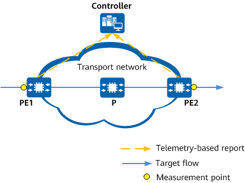
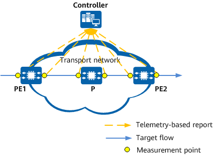

IFIT Measurement Mode
IFIT supports end-to-end and hop-by-hop measurement.
- Figure 1 shows the typical networking of IFIT end-to-end performance measurement. In this mode, an IFIT measurement point needs to be deployed on the ingress node to trigger measurement and IFIT needs to be enabled on the egress node. In this case, only the ingress and egress nodes are aware of IFIT packets and report measurement data, whereas transit nodes just forward the packets. This mode is applicable to scenarios where the overall network performance needs to be measured.
Figure 1 IFIT end-to-end performance measurement
- Figure 2 shows the typical networking of IFIT hop-by-hop performance measurement. In this mode, an IFIT measurement point needs to be deployed on the ingress node to trigger measurement and IFIT needs to be enabled on all IFIT-capable nodes along the service flow path. This mode divides the end-to-end network into smaller measurement segments, making it applicable to scenarios where faulty NEs need to be located.
Figure 2 IFIT hop-by-hop performance measurement